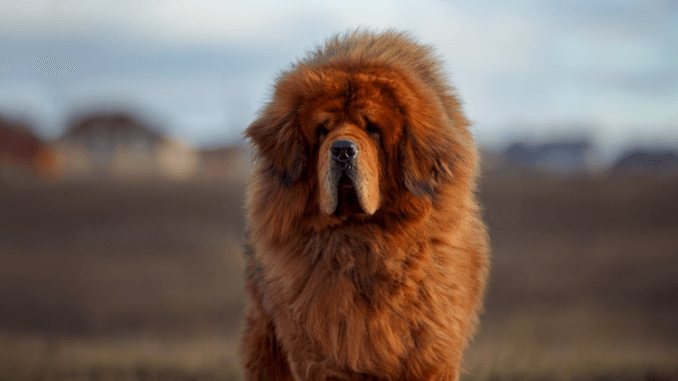
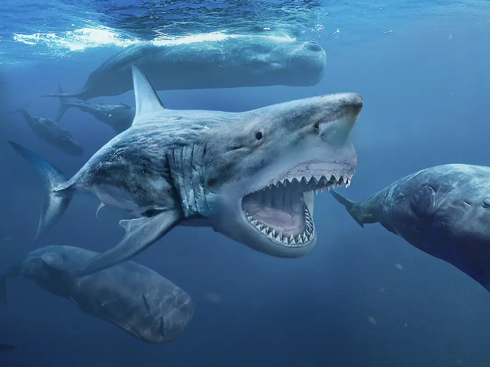

Your Next Pet!
Macaroni
Don't let this big teddy bear fool you. While he may be intimidating in size, he really just loves a good scratch behind the ears and maybe a cuddle. Macaroni loves to go for hikes and play fetch.

Shiba
This little furball is a bundle of joy. While she very much enjoys her time outside exploring the neighborhood for rodents, she's also a great emotional support cat. She is licensed by the state of OR and her purrs will send your heart soaring.
George
George is simply one of a kind. If you have any bullies in your life, one look at George will send them running. He enjoys a high protein diet (take that as you wish). You'll need to buy a good toothbrush for him but in exchange for keeping his chompers pearly white, he will love and protect you like none other.